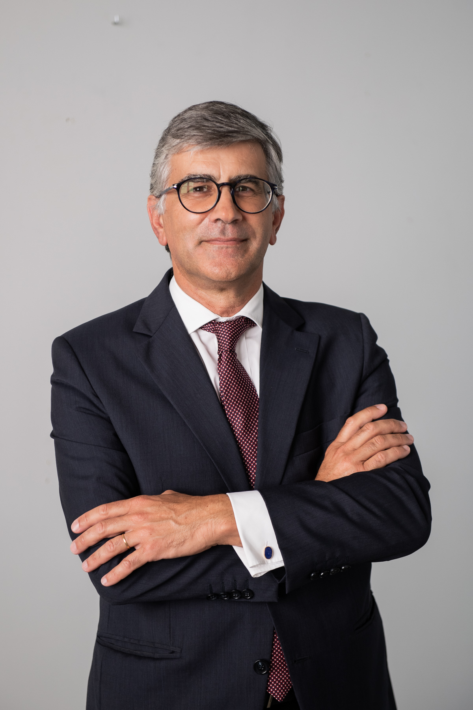
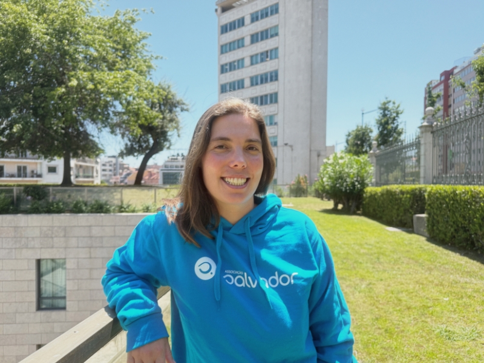
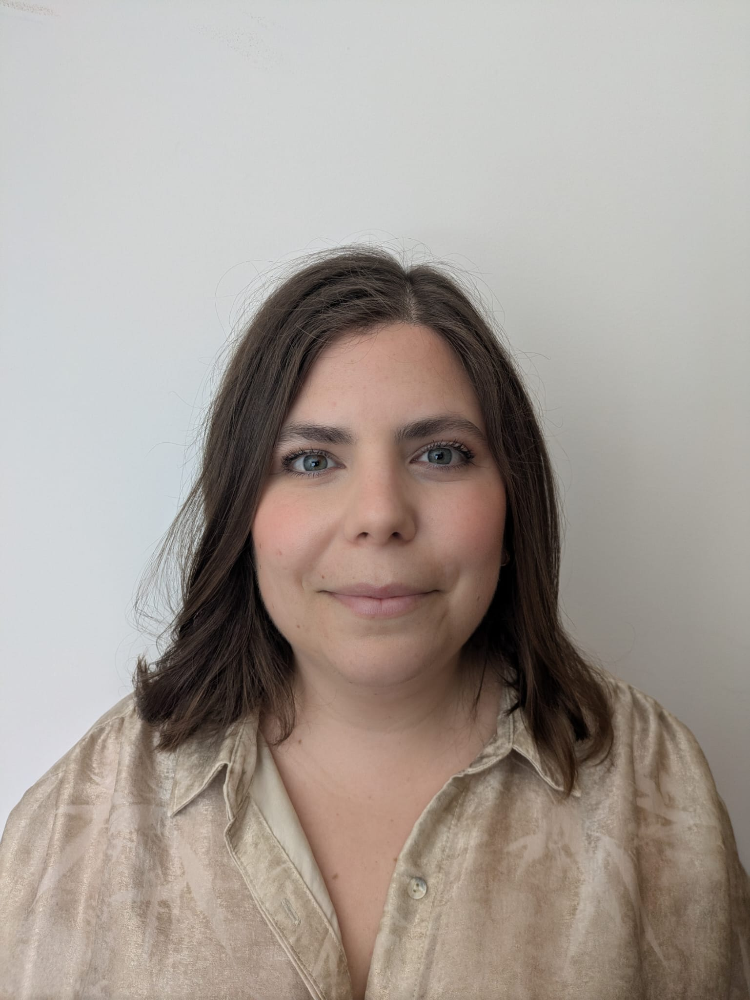
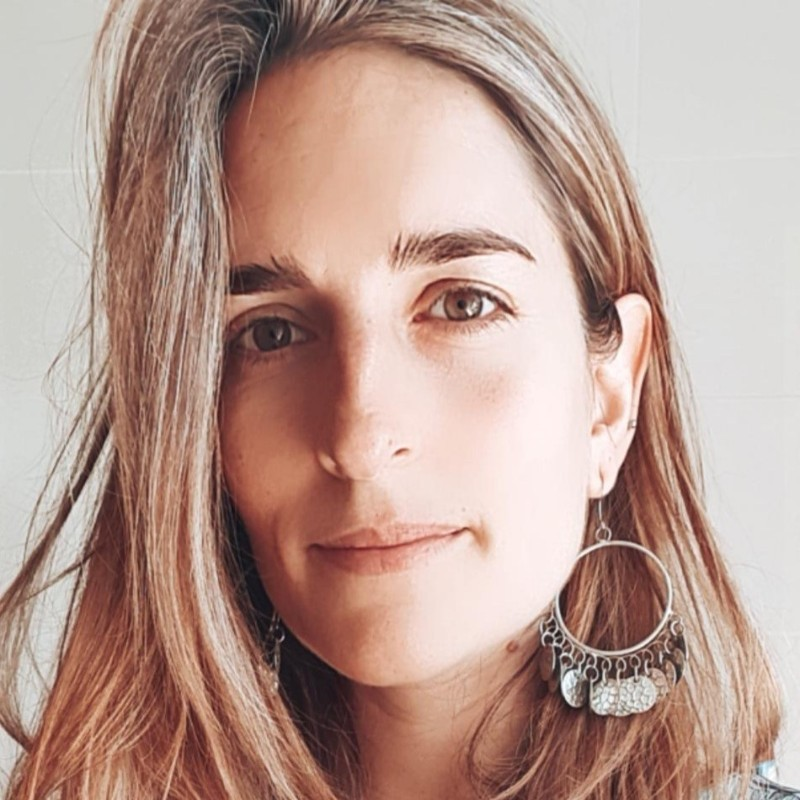
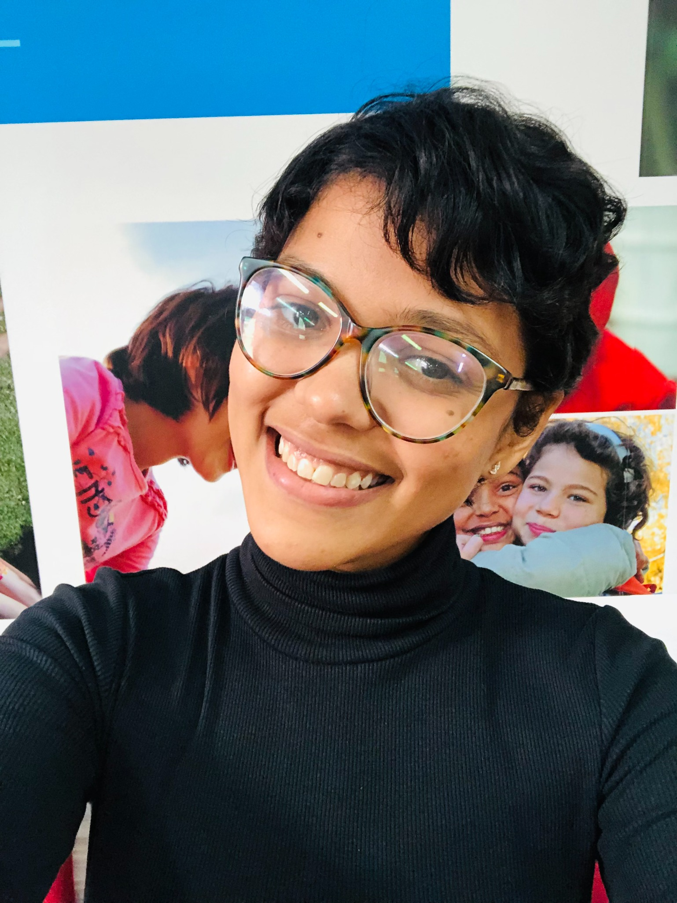
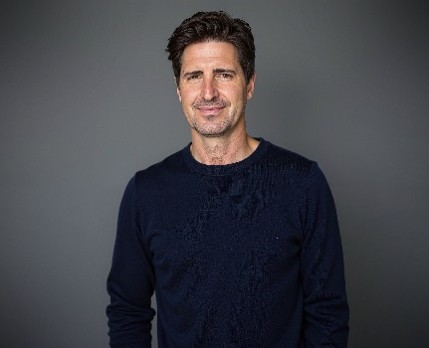
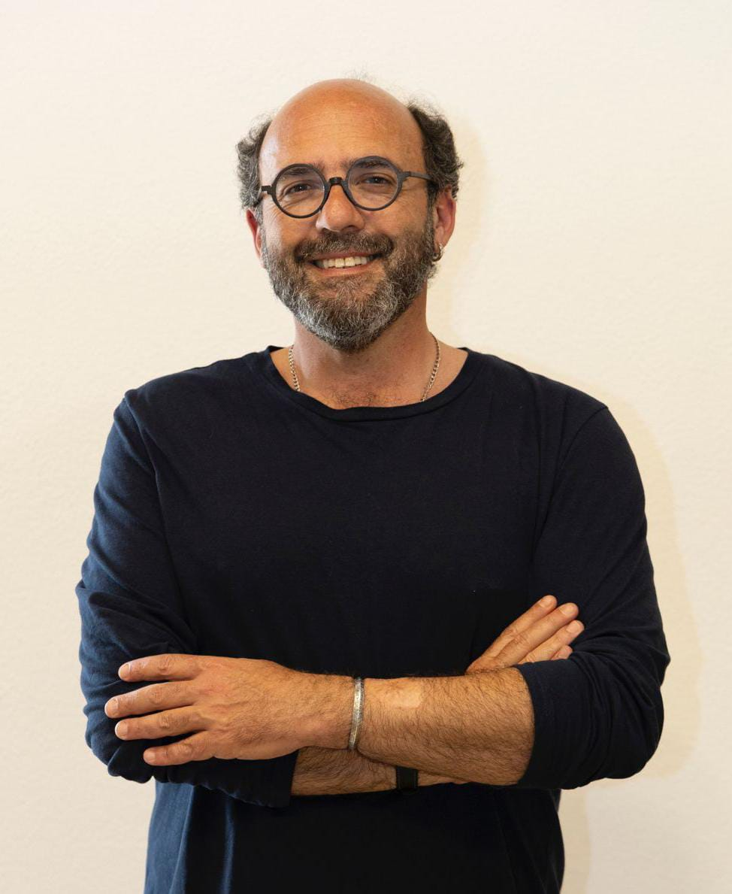

Direção · Presidente
Rui Silvestre
Gestor cultural com mais de 25 anos de experiência na direção de organizações, projetos e equipas, com forte percurso em mecenato, parcerias e fundraising.
A APF foi estabelecida em outubro de 2025, respondendo à necessidade de uma associação de fundraising em Portugal.
A APF apoia os profissionais de angariação de fundos no cumprimento da sua missão e na concretização da missão das organizações que fazem a diferença na sociedade.
No contexto europeu, a European Fundraising Association reúne organizações nacionais dedicadas a apoiar a prática ética e profissional da angariação de fundos.
A APF pretende beneficiar agentes políticos e setor público, empresas, organizações e profissionais ligados ao fundraising.
Elevar os padrões e a eficiência na angariação de fundos.
Fortalecer a ligação entre doadores e causas.
Promover relações responsáveis e uma utilização consciente dos recursos.
Promover a troca de experiências e boas práticas.
Elevar padrões e eficiência na angariação de fundos.
Para uma sociedade mais solidária e filantrópica.
Promover maior transparência no setor.
Conhecimento e boas práticas de fundraising ético.

Gestor cultural com mais de 25 anos de experiência na direção de organizações, projetos e equipas, com forte percurso em mecenato, parcerias e fundraising.

Formada em Farmácia, desenvolveu o seu percurso no setor social, na gestão de projetos e na angariação de fundos. Atualmente, gere parcerias com empresas na Associação Salvador.

Profissional de fundraising, comunicação e gestão de projetos, com experiência na relação com doadores e no GivingTuesday Portugal. Integra a direção da APF.
Preside à Mesa da Assembleia Geral desde a fundação da Associação Portuguesa de Fundraising, em outubro de 2025.

Profissional com mais de 13 anos de experiência em fundraising, liderança e desenvolvimento organizacional, com atuação nacional e internacional.

Profissional com mais de seis anos de experiência no setor social, aquisição de doadores, gestão de campanhas e desenvolvimento de equipas.

Diretor Executivo de Relações Externas e Fundraising na Nova SBE, com experiência em estratégia, inovação, diplomacia e empreendedorismo.

Especialista em fundraising, envolvimento público, Business Intelligence, Data Science e Social Data Intelligence.
Profissional do setor social com experiência em comunicação digital e angariação de fundos.
Consulte o documento institucional da Associação Portuguesa de Fundraising.